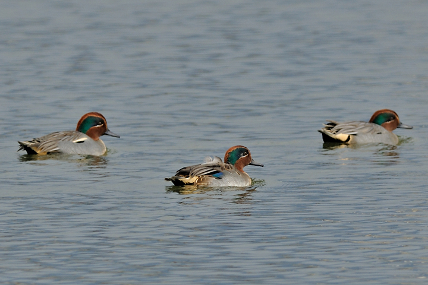
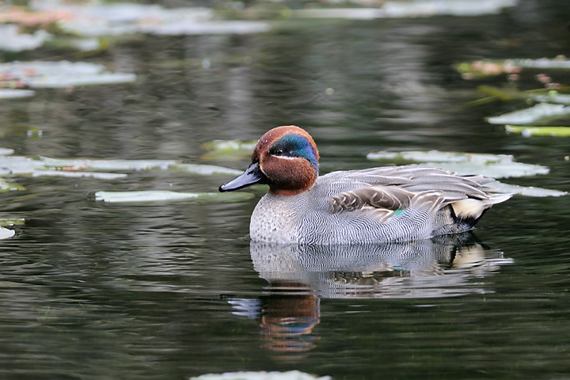

小水鴨 [ 首頁 ] [ 向上 ]
黑頭白鹮 小水鴨 鳳頭潛鴨 白冠雞 尖尾鴨 朱鸝 小卷尾 大花鷚 鴛鴦 竹雞 小鷿鷉 灰山椒 青背山雀 赤腹山雀 灰喉山椒 銅藍鶲 黃腹琉璃 黑枕藍鶲 繡眼畫眉 綠畫眉 鸕鶿 琵嘴鴨 紅胸鶲 茶腹鳾 冠羽畫眉 熊鷹 臘嘴雀 栗背林鴝 黃山雀 山紅頭 紅頭山雀 鉛色水鶇 樹鷚 大冠鷲 三趾鷗 三趾鷸 黑腹濱鷸 東方環頸鴴 黃腹鷚 灰椋鳥 黑尾鷗 秧雞
小水鴨（2009/01/02 宜蘭 2009/01/18 福山植物園）

